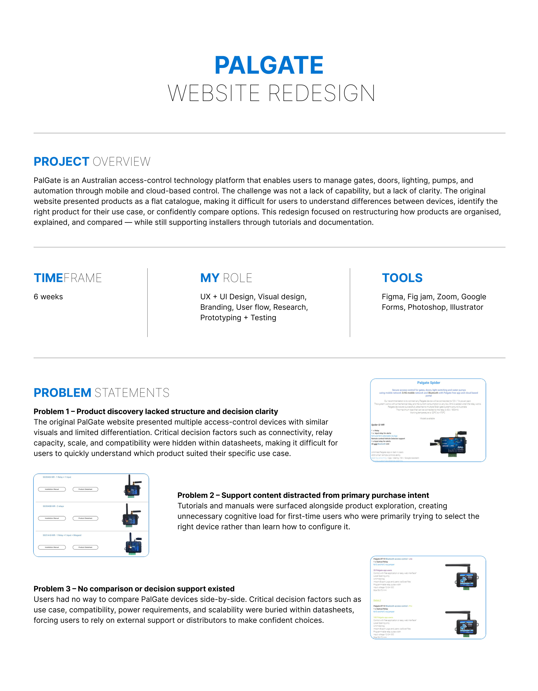
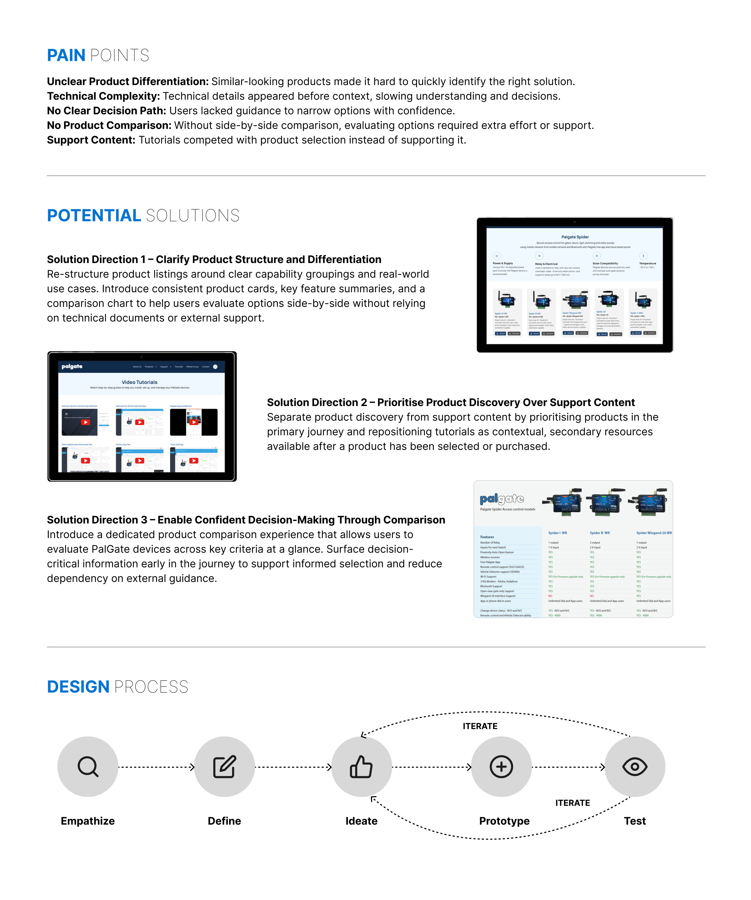
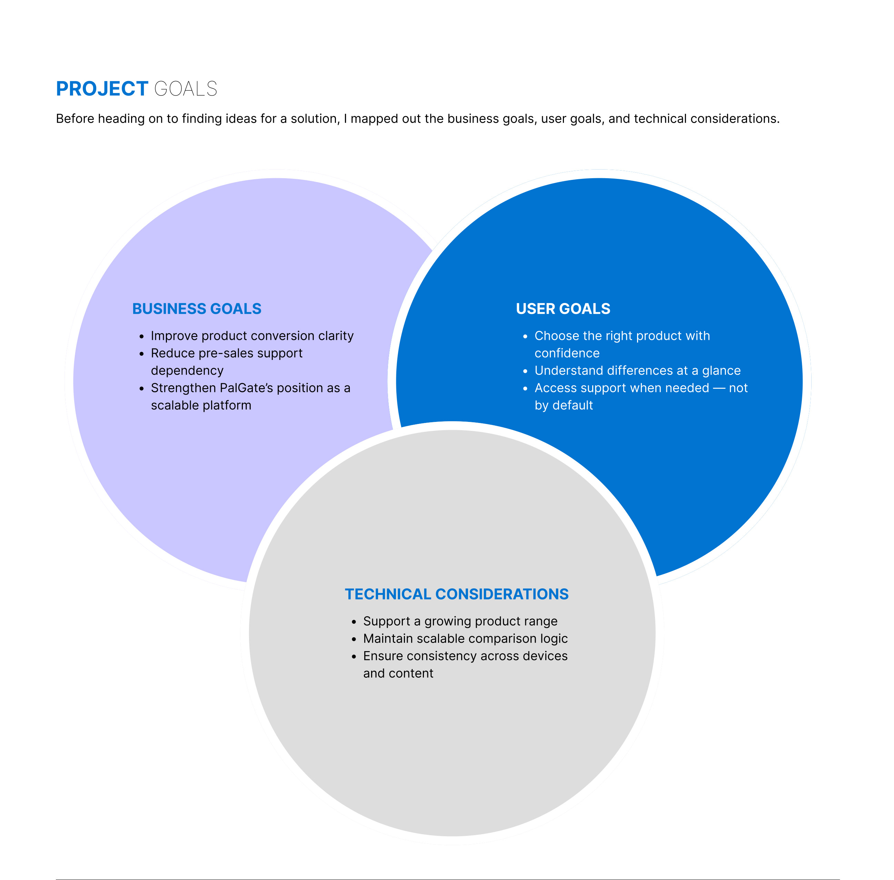
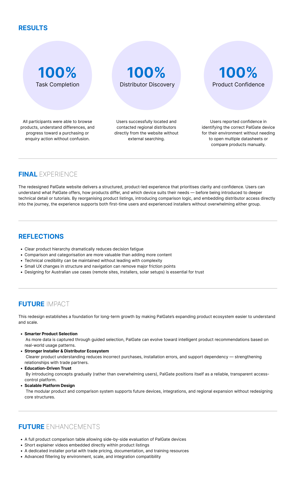

Hard to compare
Key capabilities and compatibility were not easy to scan.
Digital experience Melbourne, Australia
A technology-led website for Palgate, bringing access-control products and brand messaging into one clear digital experience.
 Selected project visual
Selected project visual
INTERACTIVE PROTOTYPE
Explore the interactive website flow in Figma. The prototype opens in a new tab.
CASE STUDY / 01
Research-led website redesign for PalGate, an Australian access-control technology platform.
01 / THE CHALLENGE
PalGate’s access-control range covered many use cases, but the existing website made similar products difficult to compare. Visitors had to dig through technical details before they could identify the right device.
Key capabilities and compatibility were not easy to scan.
Technical documents competed with product discovery.
Choosing a product and finding a distributor felt disconnected.
02 / RESEARCH & DISCOVERY
A review of the current site, competitor analysis and interviews with customers and installers surfaced one clear need: lead with practical use cases, then reveal technical depth when it helps a decision.
Make product differences easy to scan. Keep manuals and tutorials close at hand, without letting them interrupt product selection.
03 / DESIGN RESPONSE
Group devices by capability and make the differences scannable.
Build a clear path from browsing to comparison and distributor contact.
Surface manuals and tutorials as supporting resources when needed.
04 / OUTCOME
Usability testing in the supplied case study reported positive results across the core product-selection journey.
These figures are reproduced from the original case study PDF; the document does not state the participant sample size.
Clear product hierarchy can reduce decision fatigue. Grouping by intent and adding comparison support can make technical products easier to evaluate without hiding their depth.
THE PROJECT ARCHIVE / 01-09
Explore the original research, flows and design work page by page. Select any scan to open it at full size.

View full page
View full page View full page
View full page  View full page
View full page 
View full page View full page
View full page  View full page
View full page  View full page
View full page 
View full page